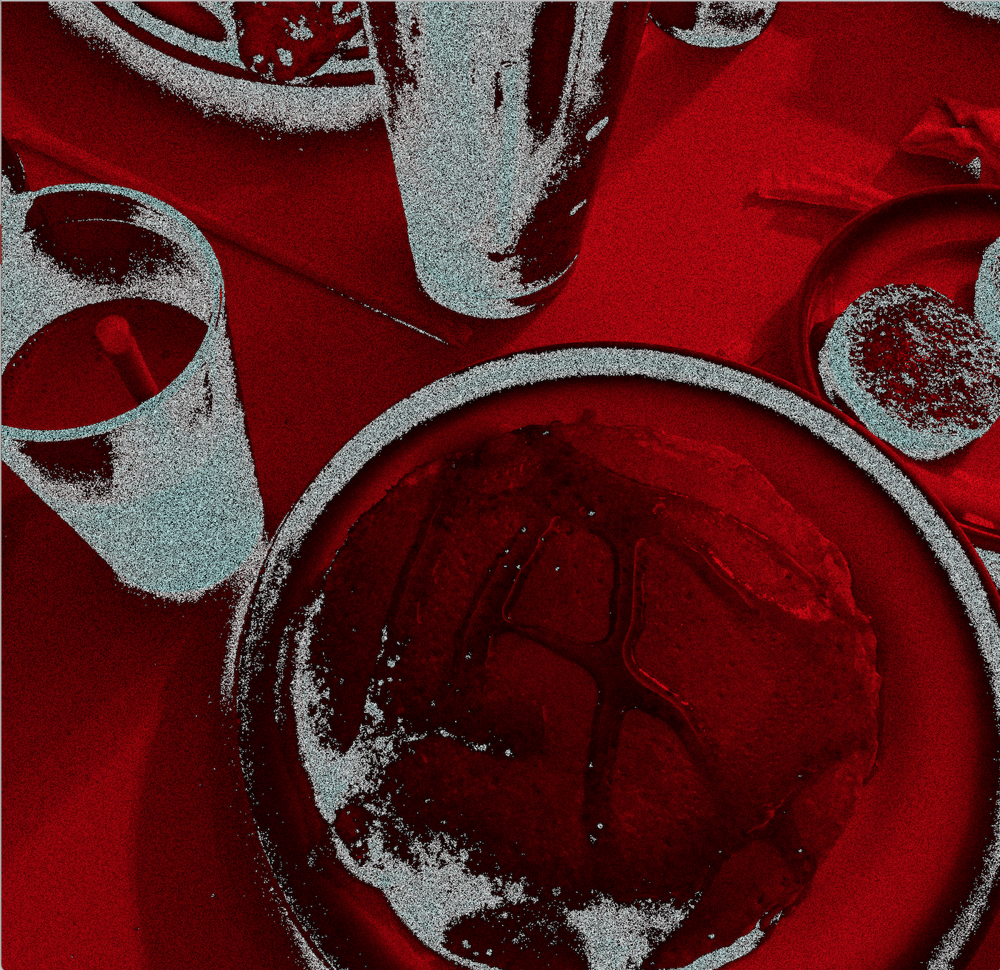
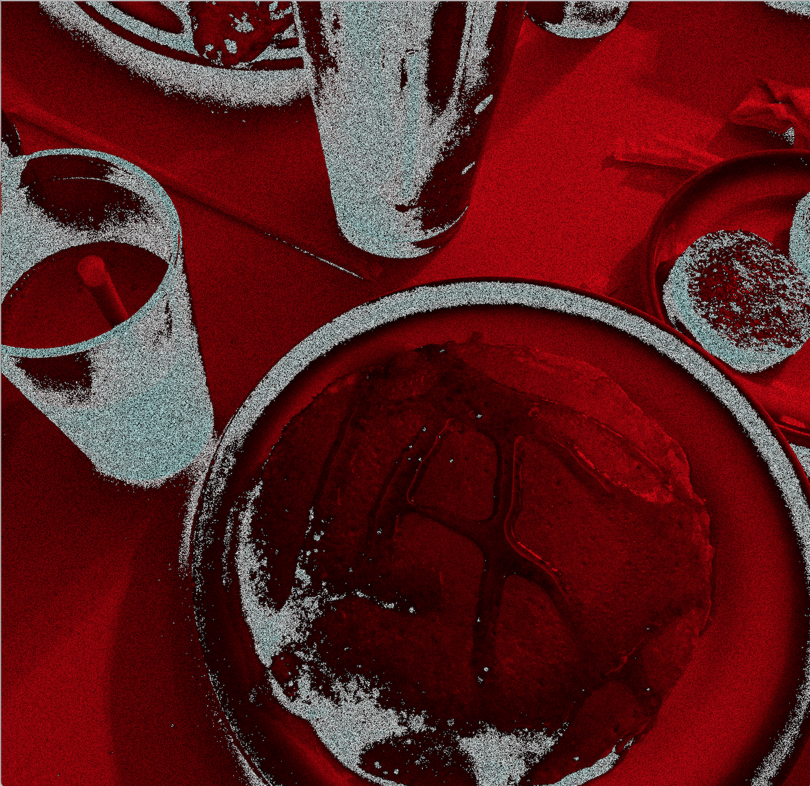

This first example uses light and color constraints to alter each individual pixel forcing them to extremes and creating a pixilated fuzz.
This second filter injects a darker color manipilation scheme, then chops the image into pieces and rearranges them randomly, resulting in a unique effect each time and allowing for negative space.